重装系统 保姆级教程
补充说明！看完再动手！
这篇教程贴所讲的安装方法为硬盘安装，关于安装方式的特别提醒：
因为每个人的电脑硬件不同，极少数情况可能安装失败（比如主板太新/太旧、硬盘分区特殊）。
不用担心，就算失败也不会搞坏硬件！只需要自己找个U盘来，插其他电脑下载东西，银色教你救
不过安装失败的情况也极度罕见，银色平时帮忙远程重装 至少进行过几百次，遇到过的失败案例加起来也不超一手之数，只是存在这种概率所以提前说明，
当然如果你自己有U盘的话，制作U盘PE安装系统，可保万无一失！
U盘PE制作教程 PE制作教程奉上，不懂可以咨询银色
其实只要仔细按照我的安装步骤来弄，基本99.9999999%稳的！
弄完你会觉得装系统和装手机APP一样简单！
安装系统全程大概 30分钟~1小时，只需格式化C盘，记得重要文件做备份！
重装系统之前的准备工作
请提前下载个 驱动精灵，救命工具提前下载
笔记本电脑如果只能连wifi，额外最好前往品牌官网按型号提前下载好wifi驱动！
这篇教程所引用的系统镜像为微软原生版本，比较纯净，部分电脑重装后可能连不上网（没自动识别到网卡驱动），所以提前下载这个工具，相当于给电脑留个“急救包”。
❌ 千万别下载到C盘（重装系统会清空C盘）！ ✅ 存到D盘、E盘，或者直接塞U盘里！
检查备份！
重装系统时C盘会被清空所以下列内容如果有重要文件，需要备份请提前进行备份
桌面文件、文档等（这类目录默认存在C盘，如果有重要文件请提前备份）
收藏夹、聊天记录（微信/QQ等）（如果有重要数据请提前备份）
游戏存档、工作资料（如果有重要数据请提前备份）
将重要文件 复制、粘贴到其他盘 比如D盘、E盘，或者直接塞到你的优盘里，也可以上传到网盘！
开始安装
安装方法推荐：
- 选 EasyRCV3：
- ✅ 适合小白用户，傻瓜式一键操作、自动修复驱动和引导问题
- ✅ 支持在线下载镜像 或 安装下载的系统镜像。
- 选 WinToHDD
- ✅ 适合技术用户
- ✅ 需手动下载 系统镜像安装。
- EasyRCV3
- WinToHDD
下载银色安装器 一键自动下载安装工具
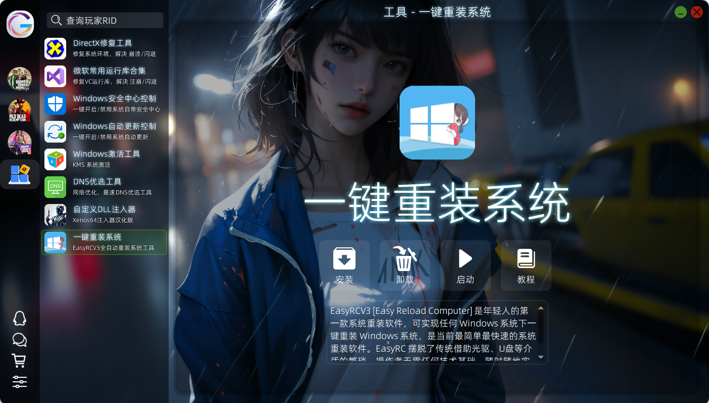
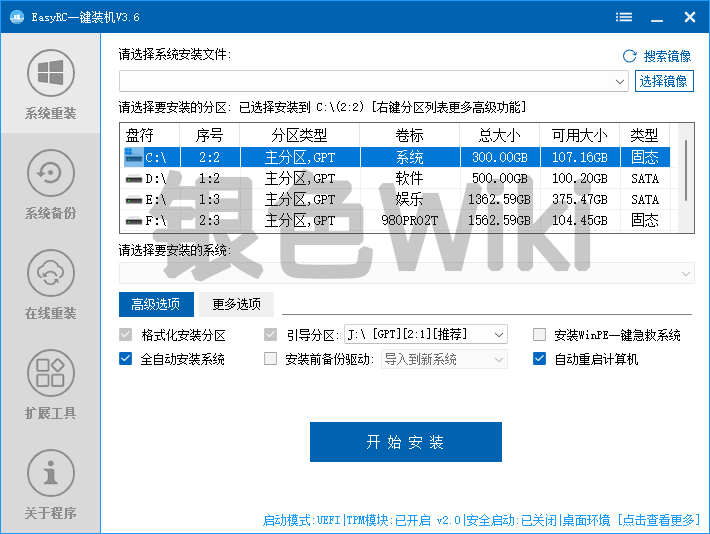
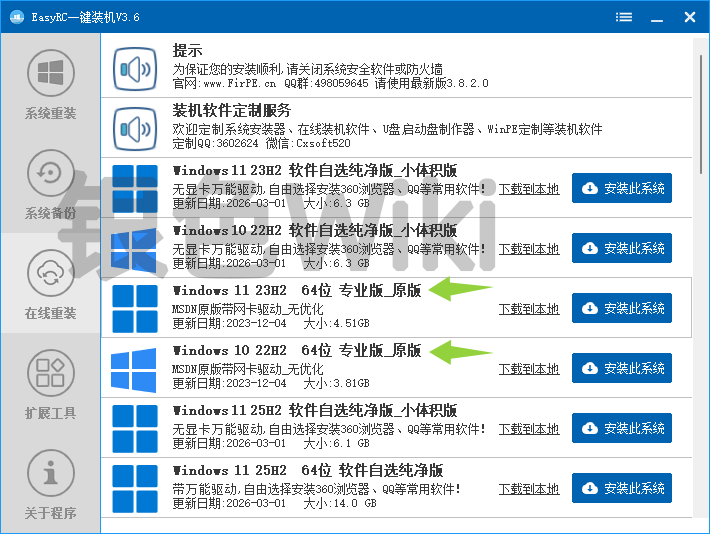
专业版_原版 系统，原生纯净，无任何捆绑软件- 点击左侧的*在线重装
- 选择
Windows 11 23H2 64位 专业版_原版或 选择Windows 11 22H2 64位 专业版_原版并点击安装此系统 - 在已选系统名称内 确保自己选择的是原版系统
- 勾选高级选项内的
安装前备份驱动 - 点击开始安装
- 任务信息内点击确定
- 弹出选择WinPE版本,一般选择第一个(Windows 11 PE 网络版),如果不行则尝试第二个(Windows 11 PE 网络版_备用线路),并点击下载此PE
- 等待下载完成后,10秒内会重启并重新安装系统,全程无需手动干预
下载方式：首先下载安装迅雷
然后复制下面 “ed2k”那一长串，打开迅雷自动弹出新建任务，选好下载位置，点击确定下载 Win11 23H2
ed2k://|file|zh-cn_windows_11_consumer_editions_version_23h2_updated_april_2024_x64_dvd_d986680b.iso|7008280576|D85A6F42483CDB163692075644778698|/
Win10 22H2
ed2k://|file|zh-cn_windows_10_consumer_editions_version_22h2_updated_april_2024_x64_dvd_9a92dc89.iso|6591338496|3D140C094BA66579C5AA031B5E729529|/
根据喜好，选择下载 win10/win11，皆为微软官方原版镜像
如需其他版本请自行前往MSDN下载
WinToHDD下载地址
以管理员身份运行 WinToHDD 程序
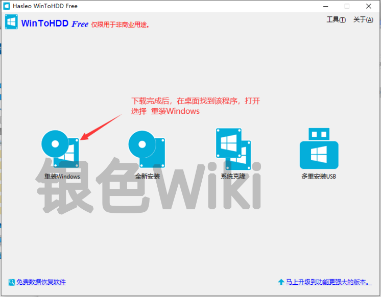
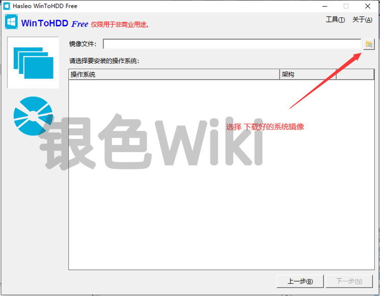
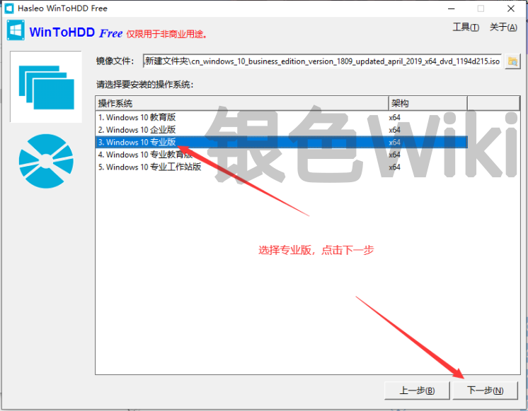
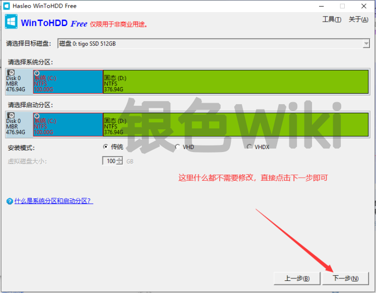
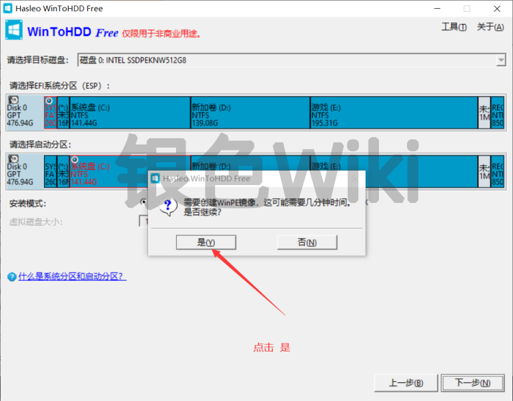
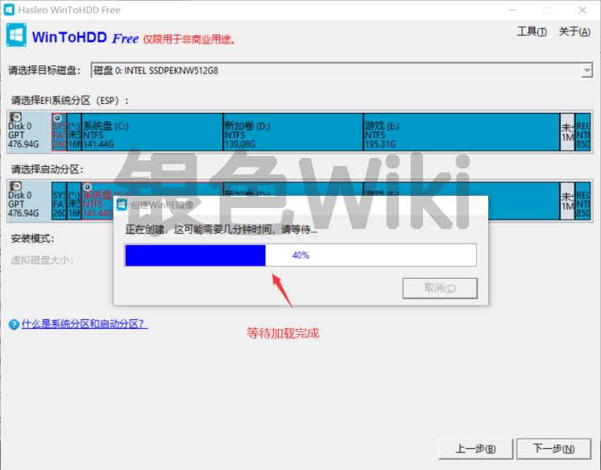
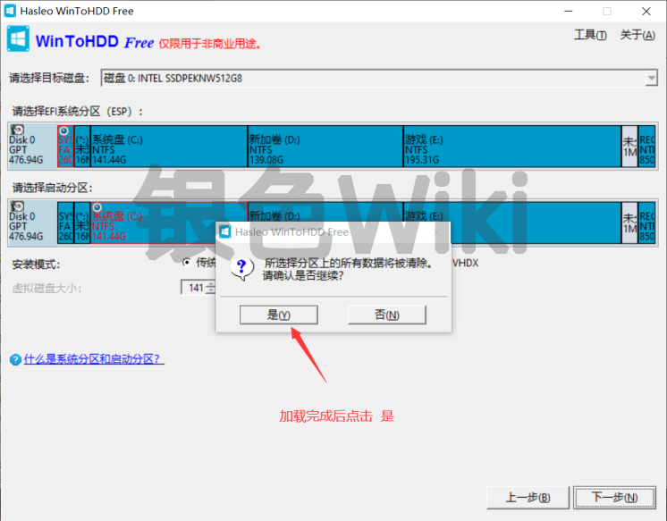
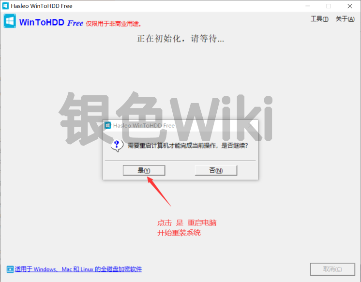
点击确定，电脑自动重启，之后全自动安装电脑会自动进入PE系统，自动格式化C盘然后自动安装新系统，
期间可能会自动重启几次，正常情况下不需要中途操作什么，等着就好了，
安装完成后，会进入windows首次安装激活界面，这里需要手动操作一下了，
大概流程如下（多年个人习惯，只提供给你参考，你也可以自己按需求定制）
（因为要离线用户名，所以需要断网，也不要连wifi）
（可防止全屏游戏时候卡输入法，游戏时候Alt+Shift快捷键切换）
此步骤重要，需要设置英文用户名!
win10点使用脱机账户 ,win11点我没有Internet链接
需要按Shift+F10呼出cmd窗口，里面输入oobe\bypassnro然后按回车，电脑会自动重启，再次进入首次安装激活界面，重复以上1-5步骤
因为当用户名里包含中文或者特殊符号时候，很多软件读取系统路径会有中文，可能无法识别会发生BUG、软件无法正常使用等情况，所以这里强烈建议使用离线用户名，纯英文或数字即可，如果你要登陆微软账号，可以进系统内登录，不影响使用的 设置纯英文用户名 比如“admin”
如果不需要设置开机密码，直接留空 点击下一步
中途有任何问题可联系我咨询，点击联系银色，直接手机拍照发我就ok！
做完以上步骤稍等片刻系统就进入到系统桌面了，这时候可以联网了！
重装后部署环境
已成功安装系统，进入桌面后建议必做的几项步骤
银色安装器内集成 下列所有工具，只需要下载一个安装器就够了
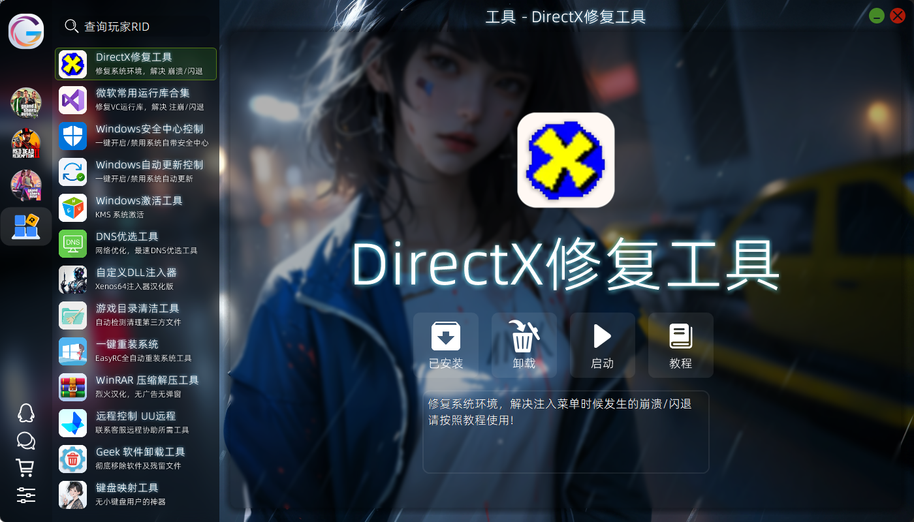
安装器 - 工具页 - 选择相应工具安装运行即可
安装器 - 工具页 - 选择相应工具安装运行即可
这里强烈推荐使用 火绒杀毒软件，误报少，后台占用资源低，安全可靠
安装火绒后，火绒自动覆盖接管安全中心服务
防止系统自动更新后影响兼容性问题
安装器 - 工具页 - 选择相应工具安装运行即可
由于安装的是微软原版 原生的纯净系统，所以安装完后还需要自己打一遍VC运行库，
安装器 - 工具页 - 选择相应工具安装运行即可